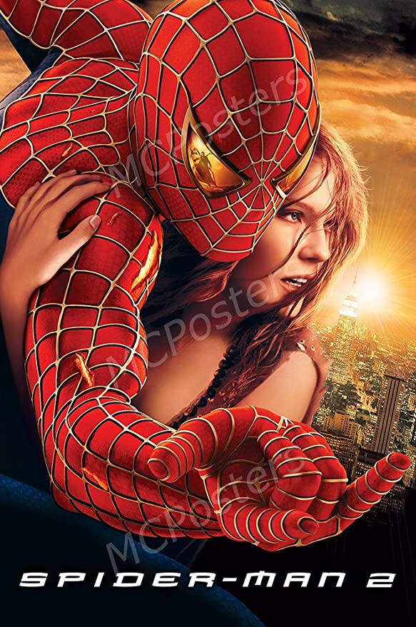

Autor del blog: Alejandro Gomez Garcia
Fecha de la publicacion: 18/02/2022 a las 8:30 pm
Origenes de Spider man
Spiderman es de un modo seguro el súper héroe más importante y famoso de la editorial Marvel Comics.
Nacido en el 1962 para obra de Stan Lee, Spiderman es la historia del tímido estudiante Peter Parker
que viene mordisco de una araña contaminada de los radios radiactivos en el curso de un experimento
científico. La picadura cambia el código genético y transforma el grácil muchacho en un individuo con
características igual a aquellas de una araña si tuvo las dimensiones humanas, un verdadero y propio
hombre araña. Peter ParkerÉl puede cumplir saltos prodigiosos, le sus manos y sus pies, adquieren la
capacidad de adherir a cualquier superficie y éste le consiente de subir sobre las paredes de los rascacielos
de Manhattan, además posee un equilibrio sorprendente y un sentido de araña que lo advierte de los peligros
inminentes.
De bueno estudiante de bioquímica ha inventado un líquido pegajoso y resistente semejante a la tela de la araña,
que gracias a de los mecanismos aplicados en las muñecas, logra rociar y a acostumbrar. Como cuerda para treparse
sobre cualquier cosa y para encarcelar los criminales capturados. Peter Parker decide de ponerse un fenómeno de circo,
ganando de vivir haciendo el acróbata, pero bien pronto había un episodio que le hizo entender que no aquella la calle de sus destinos. Un día su tío Ben fue asesinado de un ladrón que, tiempo primero Peter, se era rechazado de capturar. De éste entendió la grande responsabilidad que había en las confrontaciones de lo más debilidades, que cada día sufre las violencias de los criminales y de los súper-criminales. Decide así de ponerse las averías Spiderman y esconder su verdadera identidad.
Poderes y habilidades
Spider-Man posee una variedad de habilidades sobrehumanas adquiridas tras la picadura de la araña radiactiva durante su etapa como estudiante de high school. Entre estas capacidades se encuentran la producción y emisión de telarañas «resistentes y robustas» que le permiten a su vez desplazarse de un sitio a otro; la adhesión de su cuerpo a otras superficies; el «sentido arácnido» con el cual es capaz de percibir peligros y amenazas a su alrededor de forma precognitiva; una mayor agilidad, velocidad y fuerza; un ritmo de curación acelerado; y visión nocturna. De acuerdo con Marvel, la fuerza, habilidades de combate e inteligencia son las principales fortalezas del personaje, en contraste con su durabilidad, velocidad y energía.
¿Porque me gusta?
La vida de Peter Parker es posiblemente con la que mas nos identifiquemos, ya que el es como nosotros, no es un millonario o ser poderoso o un súper científico (aunque si muy inteligente) es solo un chico que va la escuela como nosotros. A pesar de que su historia a cambiado y avanzado en el tiempo el siempre sería el chico tímido y carismático que va la preparatoria y vive con su tía
Mejores Comics y Peliculas de Spider man
Spider man |
 Spider man2 |
CAZA SOMBRIA |
Spider man: AZUL |
LA ULTIMA CACERIA DE CRAVEN |